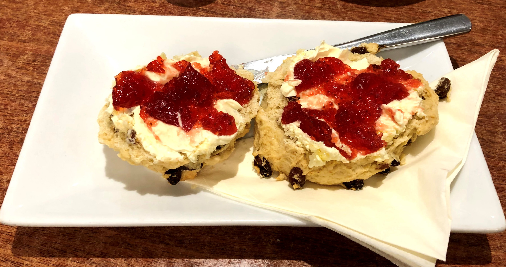

Score the Scone!

This website is documenting our scone experienes.
From city pattisseries to seaside cafes we have tried the scones and scored them out of 10.
Take a look at our menu to see the scones we have tried and maybe you'll be tempted to go and try one too! Just remember to score the scone!